Image draft → registered native asset
Miniworld · three static resources · Pixel Mat. Compare the actual image-tool draft, local conversion and reviewed native candidate. Existing assets are context: they already include generation and processing. This is not a controlled same-GPT benchmark. Underlying model, tokens and cost are unknown.
Methods and limits · Prompts, measurements and hashes · Local replay script
Each row uses the same display area. Native results use integer enlargement, with real 1× images below. Draft previews are fitted high-resolution raster images, not native-grid exports.
Citizen · 16×16
Existing game asset
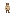
Context; already processedActual 1×
Original PNGRecorded image-tool draft
 Before deterministic pixel conversion
Before deterministic pixel conversionOriginal raster available below
Original PNGCurrent CLI default fit
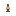
features · frame · not registeredActual 1×
Original PNGReviewed native candidate
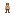
8 colors · pivot 8,3Actual 1×
Original PNG · Editable projectTree · 24×32
Existing game asset
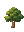
Context; already processedActual 1×
Original PNGRecorded image-tool draft
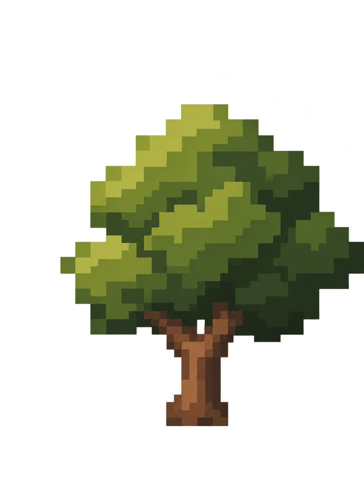
Before deterministic pixel conversionOriginal raster available below
Original PNGCurrent CLI default fit
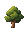
features · frame · not registeredActual 1×
Original PNGReviewed native candidate
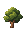
15 colors · pivot 12,4Actual 1×
Original PNG · Editable projectHouse · 32×40
Existing game asset
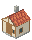
Context; already processedActual 1×
Original PNGRecorded image-tool draft
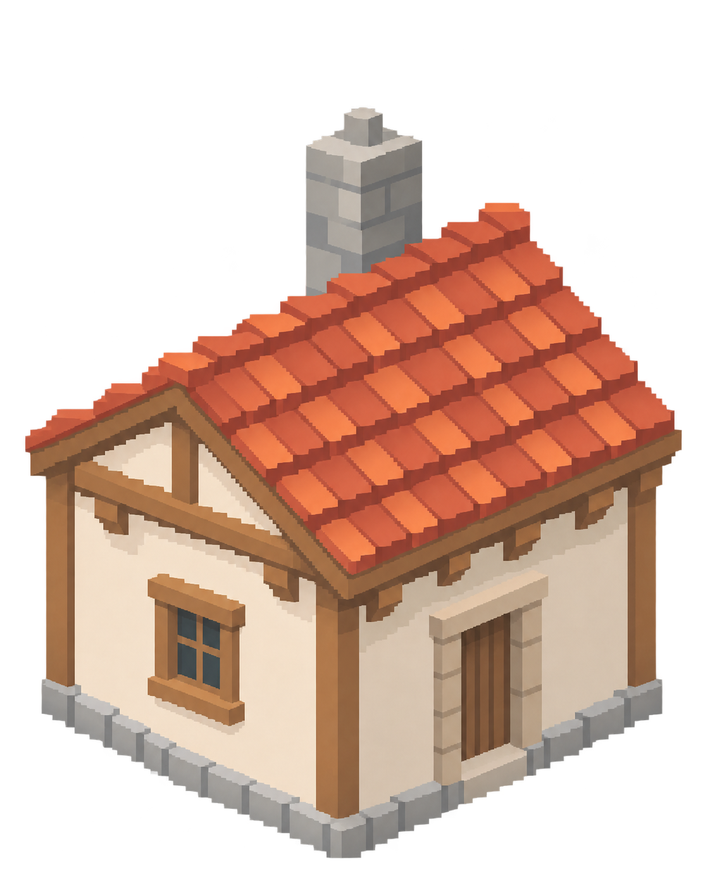
Second model call: door correctedOriginal raster available below
Original PNGCurrent CLI default fit
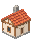
features · frame · not registeredActual 1×
Original PNGReviewed native candidate
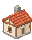
32 colors · pivot 16,8Actual 1×
Original PNG · Editable projectWhat changed after generation?
All: explicit aspect-preserving content fit, native sampling, palette fitting and support registration through Pixel Mat shared local modules. Citizen: host-authored 46-cell initial proposal restores head phase and separates feet, followed by the existing eight-color palette. Tree: registered conversion retained. House: a second image call corrects door orientation, then fixed-geometry palette consolidation from 63 to 32 opaque colors. No human-painted pixel edit is claimed. The default CLI fit is a separate diagnostic.
13 exact RGBA replay checks passed on 2026-11-22, with zero model calls during replay. The replay verifies postprocessing, not repeatability of image generation or automatic art judgment.
Offline placement fixture
Ground 32×16 · PPU 16. Registered PNG placement only; not a Unity runtime capture. One static south-facing citizen. Animation, collisions, occlusion and other states are untested. readyForIntegration = false.
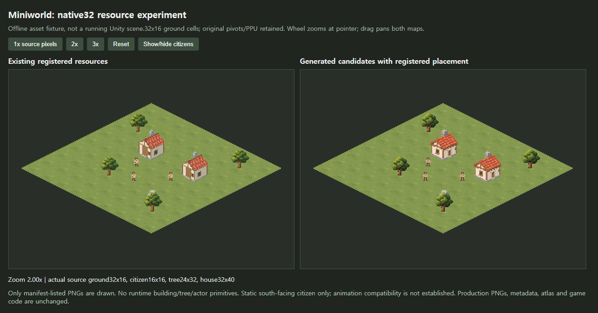
1× capture · 2× capture · 3× capture
Selected Miniworld resources are published at the project owner's request; no independent redistribution license or exclusive generated-art rights are asserted. Personal reference art is excluded.